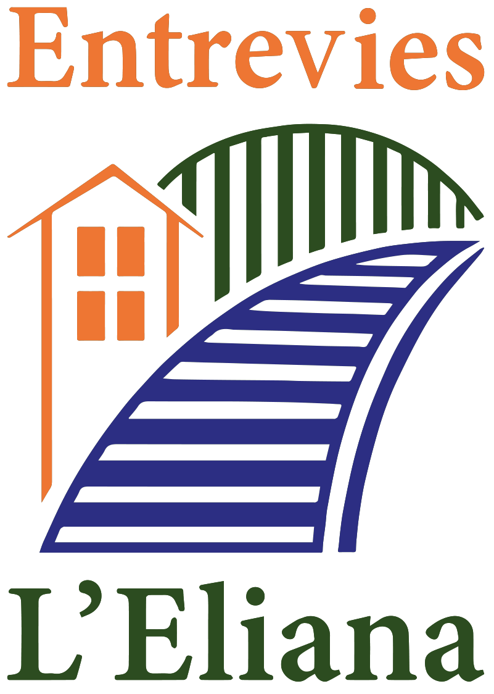

Parques y zonas verdes
Un parque o una zona ajardinada donde descansar, reunirse y pasear cerca de casa.
Accesibilidad universal: para todas las personas y todos los entornos.
Elige lo que te ayude a leer mejor. La web lo recordará la próxima vez.

¡No al cierre del paso a nivel!
Durante más de 130 años, vecinas y vecinos de l'Eliana han cruzado la vía por el paso de la estación. Queremos que se pueda seguir haciendo, con seguridad y accesible para todas las personas.
Es nuestra principal reivindicación. El paso une los barrios de l'Estació, Montepilar y Montealegre con el resto de l'Eliana.
El 24 de diciembre de 2024, Ferrocarrils de la Generalitat Valenciana (FGV) cerró el paso peatonal que, según el Ayuntamiento de l'Eliana, se había utilizado durante más de 133 años. FGV lo ha convertido en un paso entre andenes y ya no permite cruzar de un lado al otro del pueblo.
Desde entonces, muchas personas no pueden ir de un lado a otro: personas mayores, familias con carritos, quienes van en silla de ruedas y quienes no tienen coche. Lo que antes era un paseo de pocos minutos ahora es un rodeo largo o, directamente, imposible.
«Esta decisión unilateral condena a los barrios de la Estación, Montepilar y Montealegre a un aislamiento físico y social.»
Nuestras urbanizaciones no tienen ni un parque ni una zona ajardinada donde descansar, reunirse o pasear. Pedimos los mismos espacios y servicios que tiene el resto del pueblo.
Un parque o una zona ajardinada donde descansar, reunirse y pasear cerca de casa.
Canchas de baloncesto, pistas de tenis y lugares de ocio donde la juventud pueda quedar y hacer deporte.
Espacios vallados donde los perros puedan correr y que ayuden a mantener limpias las calles.
Aceras continuas y pasos de peatones rebajados para sillas de ruedas, carritos y personas mayores.
Buena iluminación, cruces seguros y rutas a pie que no obliguen a dar largos rodeos.
Que nuestros barrios tengan la misma calidad de vida y los mismos servicios que el resto de l'Eliana.
Lo que hacemos durante el año para defender nuestros barrios. Las convocatorias y novedades las publicamos primero en nuestras redes.
Recogida de firmas, escritos a FGV y al Ayuntamiento y seguimiento del proyecto para recuperar el paso.
Nos reunimos para que se nos escuche, como la concentración del 4 de abril de 2026 en la estación.
Presentamos aportaciones a normas municipales, como la ordenanza de accesibilidad.
Nos reunimos con el Ayuntamiento y otros organismos y participamos en los consejos de participación municipales.
Publicamos boletines y hojas informativas en castellano, valenciano y lectura fácil.
Reuniones abiertas a socias y socios para decidir juntos las prioridades de la asociación.
Lo que pasa en l'Eliana y nos afecta como vecinas y vecinos: obras, plenos, ayudas, actos y novedades de la asociación.
Titulares de InfoTúria, periódico gratuito del Camp de Túria. Se actualizan solos.
Más información municipal en la web del Ayuntamiento de l'Eliana y en su agenda cultural.
Reportajes, entrevistas y vídeos de nuestras actividades, de YouTube, Instagram, TikTok y Facebook.
Para proteger tu privacidad, cada vídeo solo se carga desde la red social cuando pulsas sobre él.
Canales del Ayuntamiento y de la prensa local.
Servicios y trámites gratuitos del municipio, en un solo sitio. Todos los enlaces llevan a las webs oficiales.
Somos vecinas y vecinos de l'Estació, Montepilar, Montealegre y alrededores. Nos unimos para tener una sola voz ante las administraciones y las empresas, y para defender una movilidad segura y accesible para todas las personas.
Somos una asociación sin ánimo de lucro, inscrita en el registro de asociaciones, y formamos parte de los consejos de participación del municipio.
Boletines, comunicados y hojas informativas de la asociación. Muchas están en castellano, en valenciano y en lectura fácil.
Convocatorias de asambleas y reuniones, y lo que se trató y acordó en las anteriores.
Documentos de la asociación a disposición de cualquier persona: estatutos, inscripción en el registro, cuentas, memoria de actividades y subvenciones.
Este es el lugar. Cuéntanos qué necesita tu calle o tu barrio, escríbenos tus propuestas, propón una actividad o pregúntanos lo que quieras. Leemos todos los mensajes y te respondemos.
¿Necesitas la información en otro formato accesible? Pídenoslo. También tienes esta web en lectura fácil.
Elige si es una reivindicación, una propuesta, una actividad o una pregunta, y cuéntanoslo con tus palabras. Funciona desde el móvil y desde cualquier ordenador.
Escribir mi mensajeRecibirás un correo confirmando que nos ha llegado. El formulario está en valenciano y castellano.
Cuantas más personas seamos, más difícil será que ignoren nuestras reivindicaciones.
Solo son 2 minutos. Tus datos van directamente al registro de socios de la asociación, protegido y solo accesible para la Junta Directiva. No se guardan en esta web.
Rellenar el formulario de altaAl enviarlo recibirás un correo de confirmación. El formulario está en valenciano, castellano e inglés.
Te responderemos por correo con la bienvenida y el enlace para completar el alta.
Responsable: Associació Veïnal Entrevies de l'Eliana (NIF G22454433), entreviesleliana@gmail.com. Finalidad: responder a tu mensaje y, si lo pides, gestionar tu alta como socia o socio. Base jurídica: tu consentimiento y, en su caso, la relación asociativa. No cedemos tus datos a terceros salvo obligación legal. Puedes ejercer tus derechos de acceso, rectificación, supresión y demás escribiendo a entreviesleliana@gmail.com.